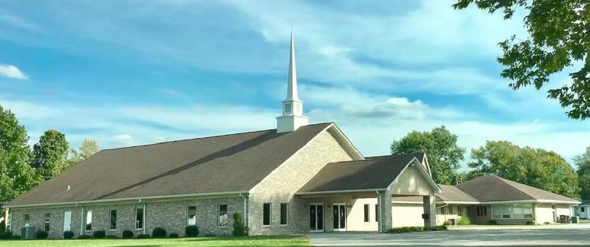
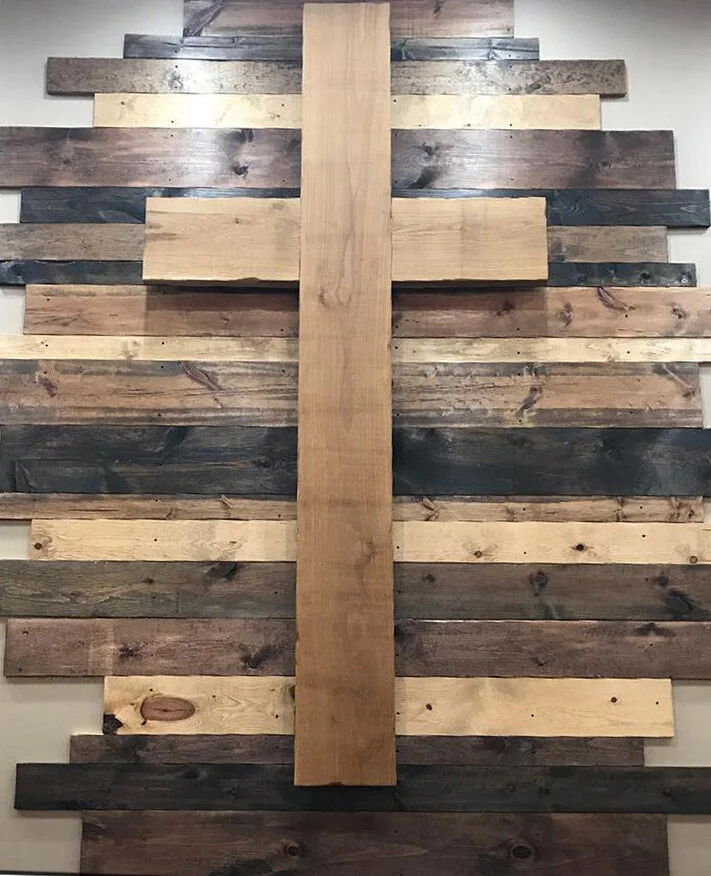

Rooted in Jesus Christ and serving Chesterfield, Indiana with open hearts, Biblical truth, and compassionate community.
"We believe people are created and called by God to grow throughout our lives as individuals and together in faith as God's family. Many opportunities to grow and become more like Jesus are available as we discover God's family and discover God's Word."
We discover God's Word when we engage in Biblical understanding, share with one another in curiosity, and grow in wisdom. We discover God's family when we connect in community.
Engaging in deep Biblical inquiry, grounded sermons, and life-applicable small group studies.
Cultivating authentic friendship, inter-generational support, and mutual prayer.


Connecting people of all generations to grow together as God's family with open hearts and warm fellowship.
Chesterfield Community Church of God is affiliated with the Church of God movement (headquartered in Anderson, Indiana).
The Bible is the inspired Word of God, providing our ultimate guide for faith, daily conduct, moral living, and spiritual growth.
Forgiveness and eternal life are gracious gifts received through personal repentance and faith in Jesus Christ, who died and rose again.
We emphasize the spiritual unity of all believers across traditions. If you belong to Christ, you belong to His family and are warmly welcomed here.
Whether you have worshiped for decades or are stepping into church for the first time, there is a place for you at Chesterfield.